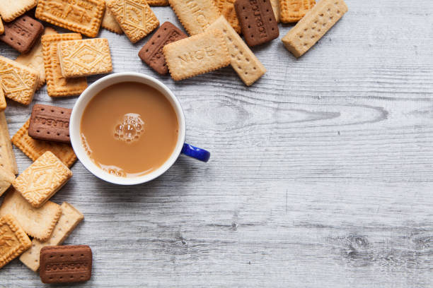

How to Make Tea

At the very least, tea is a flavourful way of getting enough fluid into your body each day.
On top of that, studies have shown teas can help protect your teeth and your heart.
Ingredients
- Teabag
- Water
- Milk - Dairy/Plant-based (optional)
- Sugar/Honey (optional)
Preparation
- Run the tap water first so that it aerates, and boil in batches, so as not to lower the oxygen levels (oxygenated water has been found to improve water taste/quality in some cases)
- Add a tea bag to your mug/cup (this may vary in size, but preferrably a big one)
- Pour the water over the tea bag and allow to set briefly
- Stir lightly
- Allow to steep shortly (2 to 3 minutes)
- Add milk and/or sugar/honey (optional)